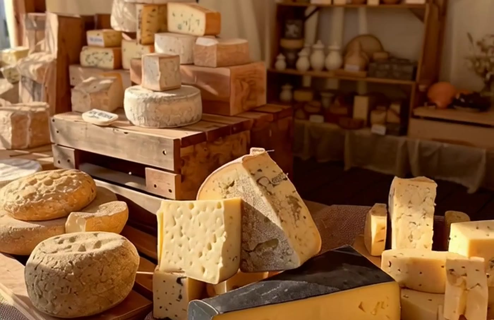

Savour the flavours of Britain.
A festival that celebrates craftsmanship, community and indulgence — built around the people who actually make British cheese.
Two days, two very different moods.
Saturday is a family-orientated affair — funfairs, village fete-style activations, live music from legacy and current chart-topping bands, and cooking demos running into a late-evening party. Sunday takes a more traditional turn: a proms-styled evening with a philharmonic orchestra and leading singers, finishing with a grand spectacle. Both days open with a farmers market from 10:00–13:30.

What's on the ground.
Sampling zones with traditional and contemporary British cheeses, breads, chutneys and drinks. Live cheesemaking demos, pairing sessions and culinary masterclasses for all ages. Mini-farm experiences, storytelling and children's tasting areas. Local musicians and street performers throughout. Market-style stalls from 60+ artisan vendors selling cheese, preserves, drinks and handcrafted goods.
The numbers.
Visitors over 2 days
A highly targeted audience of food and drink lovers.
Artisan traders
Showcasing the best British produce.
Cheese selections
To taste and explore across the weekend.
Interactive zones
For workshops, tastings and kids' activities.
Entertainment spaces
Live music and demonstrations.
Picnic & seating capacity
At any one time across the site.